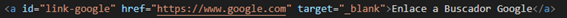
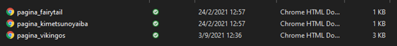

Para crear una estructura de enlaces básicos tendremos que usar la etiqueta "a". Entre la apertura
y el cierre de esta etiqueta, agregaremos el contenido que se anclará en el viewport y que se verá como un
enlace donde el usuario puede hacer “click”, luego, esta ancla lo redirigirá.
Anchor recibe como atributo “href” y le pasamos como valor la dirección que tendrá el enlace.
Esta puede ser local o remota.
Si necesitamos generar un enlace que lleve a un sitio específico en internet, debemos aplicar enlaces absolutos.
Cuando renderizamos la página web podremos observar que está nuestro link creado con la descripción que
hemos colocado entre las etiquetas "a" como contenido del elemento. Si pasamos el mouse sobre el
link, en la parte inferior izquierda del navegador podemos visualizar una pequeña pestaña de la ruta
donde nos redireccionará ese link.
Para evitar que el contenido de nuestro sitio web, sea reemplazado por el de la página vinculada agregamos
el atributo target=”” con el valor _blank. Esto hace que se abra una nueva pestaña con
el contenido vinculado.

En el caso de un sitio web que su página principal es llamada index.html y tengamos un conjunto de
páginas html internas, tenemos que usar referencias relativas para construir los hipervínculos
en nuestro directorio con los nuevos archivos html a vincular.
Enlaza secciones internas
Si queremos crear hipervínculos desde la página principal a paginas internas primero, debemos crear las
páginas interiores. En este caso, la página principal debe estar ubicada en la raíz de la carpeta del
proyecto. En esta página, agregaremos los enlaces que nos llevarán a otras páginas dentro del mismo
sitio web.
Para recrear el ejemplo de este enlace primero debemos crear algunas páginas internas que contengan una
estructura base y un párrafo. Luego, la guardamos dentro de la subcarpeta nombrada “html”.
Ahora crearemos un conjunto de enlaces en la página principal, para referenciar las páginas internas.
Estos enlaces pueden estar en una lista no ordenada para facilitar el uso del usuario.

Como necesitamos referenciar páginas ubicadas en una estructura de directorios en nuestro computador,
debemos usar referencias relativas. Luego, solo falta agregar a las páginas internas un enlace para
luego retornar a la página principal.
Ahora necesitamos crear un link en el archivo “página_vikingos”, para que se vincule con el archivo
principal, en este caso “index.html”. El enlace puede referenciarse “volver” con una
referencia relativa, teniendo en cuenta que, el archivo donde se generará el enlace estará
ubicado en la carpeta html (no en la raíz).
Primero indicaremos en la ruta que es necesario salirse de esa carpeta, es decir, primero debemos
ir a la raíz de la carpeta para luego referenciar el archivo principal. Los pasos serian los siguientes:
Anclas
Al crear enlaces en las páginas internas, para luego volver a la principal, estamos generando una
estructura de navegación dentro de nuestro sitio web. A veces, necesitamos generar una estructura de
navegación que funcione dentro de la misma página (misma hoja), en el caso de tener un gran volumen de
contenido podemos usar anclas para crear la navegación.
Para aplicar el concepto de ancla podemos agregar un grupo de enlaces en la parte superior de la página,
que permite a los visitantes saltar rápidamente a los títulos del contenido y luego volver arriba para
crear un enlace interno o ancla. Primero, debemos colocarle un id a las etiquetas que van a estar ancladas
para luego aplicar el ancla.
Para las anclas construiremos la etiqueta a y en el atributo href colocaremos “#” seguido del id
que le dimos a la etiqueta a anclar.
Para que la estructura de navegación quede funcional, es conveniente agregar un enlace al final
de cada sección de contenido que puede decir: volver al inicio de página.
Si tenemos un buen uso de anclas podemos agregar un punto de referencia al inicio del documento,
para poder generar el enlace entre volver y el inicio de la página. Al final de cada sección de contenido,
agregaremos una etiqueta enlace con el valor “#inicio” en el atributo de href y con el contenido
de volver al inicio entre la etiqueta de enlace.
Las etiquetas anchor podemos aplicarla a cualquier elemento que deseemos que tenga una referencia a
cualquier página externa, interna o alguna parte de la página que estamos visualizando en el momento.
Por ejemplo, podemos aplicarla a imágenes, párrafos, títulos, entre otros elementos más.